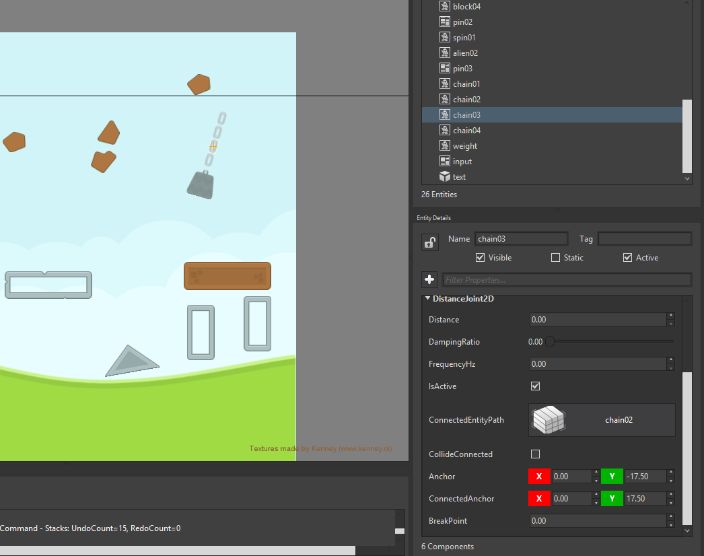
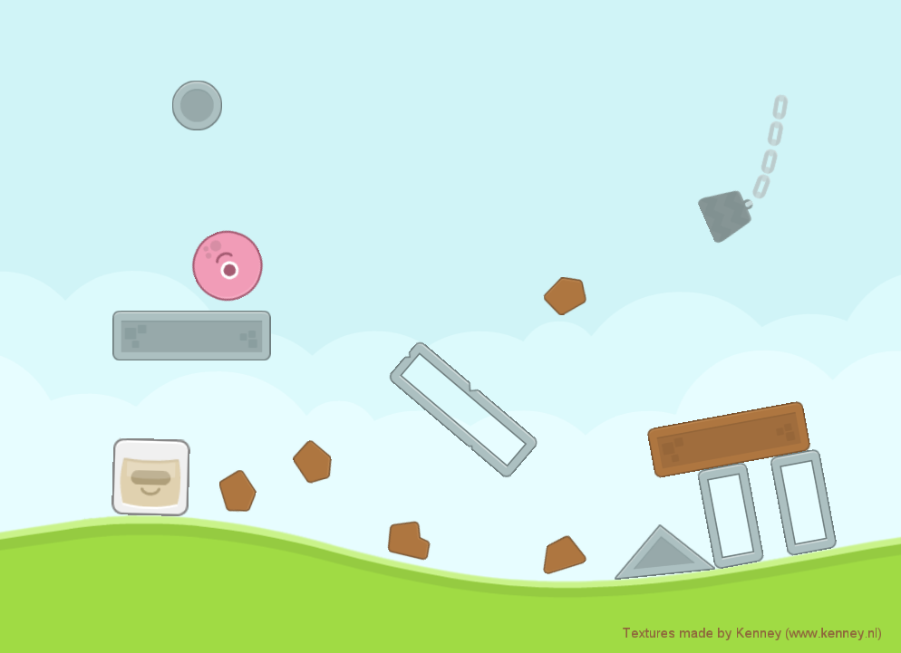

Goal
A joint in physics is a relationship between two different objects. Such is a base behaviour when working with physics, and Wave Engine supports multiple types of 2D joints.
This recipe will briefly summarise all of the available 2D joints, showing how are handled in code in general aspects. We will see how a distance joint results in game.
Hands-on
Every 2D joint inherits from abstract class WaveEngine.Framework.Physics2D.Joint2D. Wave Engine supplies currently the following implementations:
- DistanceJoint2D: the distance between joined entity and original one is kept during the scene’s life.
- WeldJoint2D: rigid relationship between two entities.
- MouseJoint2D: establishes a joint between the original entity and the mouse/finger being dragged along the screen (i.e. the entity follows the dragging).
- PrismaticJoint2D: limits the movement between entities along the specified axis (i.e. in the same way an slider works).
- RevoluteJoint2D: creates a dependency between two entities where the distance is fixed and each one of them can rotate along the respective anchors.
- RopeJoint2D: it is a RevoluteJoint2D specifically designed for ropes.
With Wave Visual Editor
For example, we will use the BasicPhysic2D Sample from the Samples repository, that uses all joints
In the scene where we have many entities, select one of the chains: 
In the Entity Details panel you can see all properties a DistanceJoint2D can have and the other entity which is connected in the ConnectedEntityPath property.
As you can see, adding a joint allows to select the joint type and the connected entity from the scene.
With Visual Studio (for Windows or Mac)
The code to recreate a similar entity with a distance join by code looks like:
Entity chain = new Entity("chain")
.AddComponent(new Transform2D())
.AddComponent(new Sprite())
.AddComponent(new SpriteRenderer())
.AddComponent(new RigidBody2D())
.AddComponent(new RectangleCollider2D())
.AddComponent(new DistanceJoint2D(){);

Wrap-up
This recipe has showed us which are the available Joint2D in Wave Engine, how those are generically used and, more specifically, how the DistanceJoint2D works on one of our samples. Feel free to explore the full BasicPhysic2D Sample to see the other joints in action.